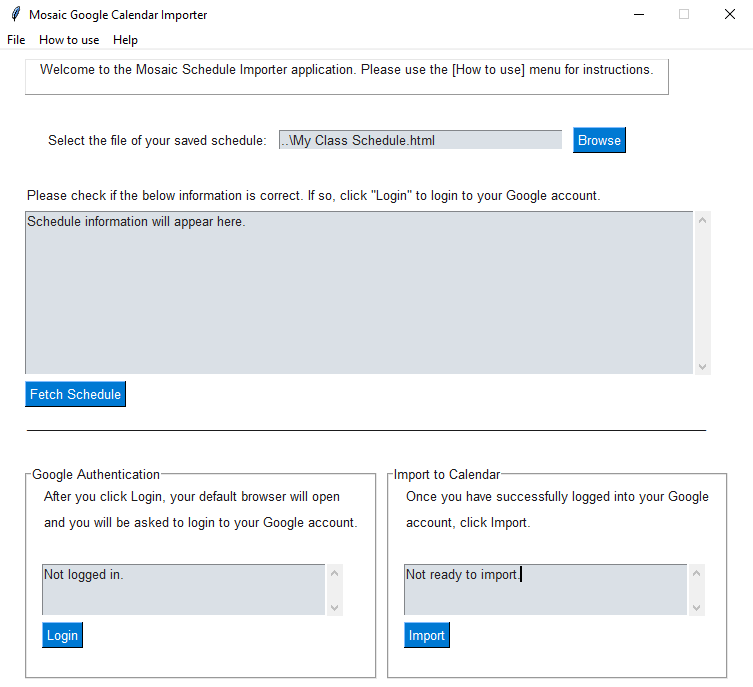
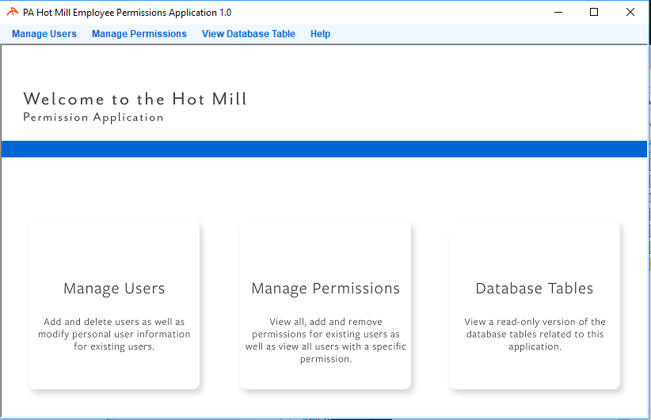
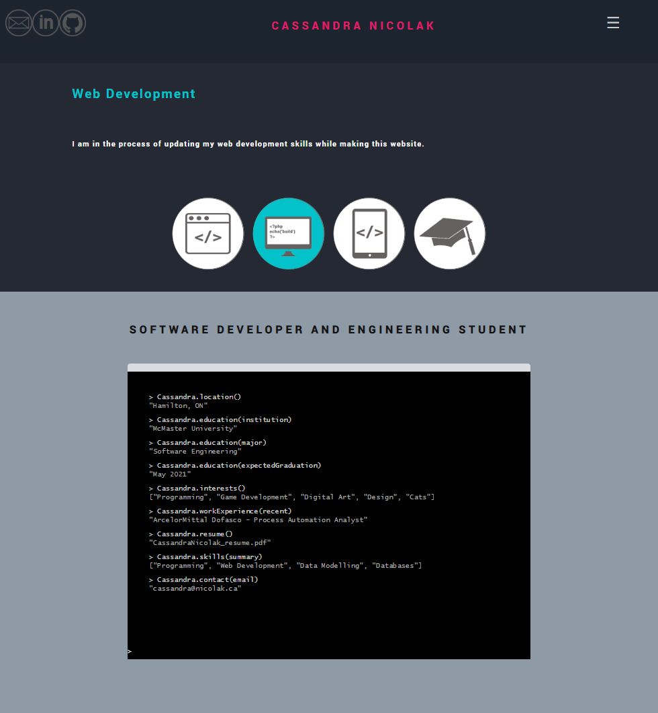

Hover over the buttons below to get an idea of what I know.
Application Development
I have experience with developing documentation involving databases, Python, Java, Visual Basic.net and winforms.
Web Development
I am in the process of updating my web development skills while making this website.
Mobile Development
In Winter 2018 I will be porting an iOS application to a Windows desktop application.
Educational Software
Currently I volunteer at McMaster University's Outreach
program to introduce Computer Science concepts to young children.
Software Developer and Engineering Student
Résumé
Education
McMaster UniversityClass of 2023 Software Engineering, B.EngHamilton, ON
Relevant Courses:
Unix and shell programming, makefiles, version control; assembly basics, translating high-level language into assembly, parameter passing, arrays, recursion; compiling, debugging, profiling, and software optimizations.
Fundamental concepts of programming: expressions, statements, procedures, control structures, iteration, recursion, exceptions; precise memory model of traditional imperative programming languages; basic data structures: records, arrays, dynamic structures; use of libraries.
Basic data structures: stacks, queues, hash tables, and binary trees; searching and sorting; graph representations and algorithms, including minimum spanning trees, traversals, shortest paths; introduction to algorithmic design strategies; correctness and performance analysis.
Measurements. Unit testing, slicing and debugging, integration testing, regression testing, testing strategies, test coverage.
Data modeling, integrity constraints, principles and design of relational databases, relational algebra, SQL, query processing, transactions, concurrency control, recovery, security and data storage.
Hard and soft real-time systems. Safety classification. Fail-safe design, hazard analysis. Discrete event systems. Modes. Requirements and design specifications. Tasks and scheduling. Clock synchronization. Data acquisition. Applications in real-time control.
Physical networks, TCP/IP protocols, switching methods, network layering and components, network services. Information security, computer and network security threats, defense mechanisms, encryption.
Design of user interfaces. Principles of good interface design. Human input. Displaying complex data using graphics and virtual reality. Modes and mode awareness problem. Health issues, information overload. Special purpose graphics hardware. Interface design tools; on-line help systems.
Open-ended software development emphasizing concurrent system design; measurement, inspection, software metrics, software project management; testing methods.
Open-ended design of computational solutions to practical problems that involve both theoretical (algorithmic) analysis and implementation; solving computational problems through an experiential approach; revision and version control.
Software life cycle, quality attributes, requirements documentation, specifying behavior; classes and objects, interface specification; creational, structural, and behavioral software design patterns; implementation in code, reviews, testing and verification.
Sustainable architectures; design for change and expansion; software architecture design space; object oriented analysis and design; architectural styles; methodology of making architecture decisions; project organization.
Processes, threads, concurrency; synchronization mechanisms, resource management and sharing; objects and concurrency; design, architecture and testing of concurrent systems.
Athlabasca UniversityWinter 2018 Online StudyAthabasca, AB
Technical elective course that involved creating and designing a dynamic website and its design documentation. Learned how to apply a structured approach to identifying needs, interests, and functionality of a website.
HTMLCSSJAVASCRIPTJQUERYJSONAJAX
Work Experience
ArcelorMittal Dofasco2017 - 2018 Process Automation Analyst
Created various small Python scripts to automate routine tasks. Some examples: data extraction parser with regex, SSIS package maker, SQL Server table maker, transposing and manipulating data in an Excel sheet.
Used SQL Server Integration Services (SSIS) to transform and move data from an Oracle database to an SQL server database.
Modified SSIS packages for SharePoint Online migration.
Created many tables, views and stored procedures using SQL Server Management Studio.
Used SQL Server Analysis Services (SSAS) to create a cube for the Hot Mill. Created over 400 DAX calculations.
Created an Alerts Application in Visual Basic.NET that displayed alerts once the service inspection system wrote lines to a database table.
Designed and produced a Hot Mill Piece Compare utility in Visual Basic.NET that compared Hot Mill piece data across multiple Oracle databases and displayed discrepancies.
Built an authentication application in Visual Basic.NET that allowed the Business Unit Contact to modify permissions for users using Hot Mill applications.
Collaborated with the development of a C# Messaging Queue program that streamed data to a Power BI dashboard.
Provided mentorship and guidance to an intern while troubleshooting and debugging a large Quality Monitoring System application in Visual Basic.NET.
Computing and Software Outreach2016 - 2017 Software Outreach LeaderHamilton, ON
Assisted with the development of interactive software applications using ELM.
Coordinator for McMaster's igniteCS program.
Visited schools in the HWDSB area to introduce to and teach students about programming.
Attended conferences.
ElmGitApple Apps
Projects
Welcome. I have completed many academic and workplace projects. Please see a few examples below.

Mosaic Import
For my Software Project Management course I had to work in a group of three to reimplement an open source project. We took a schedule importer for another school that was a Chrome extension and ported it over to a Python desktop application for McMaster University.
For my Software Design course, I had to work in a group of five where we designed a Beer Review application in Java. The primary goal was to implement graphing algorithms and to demonstrate practical use cases.

Employee Permissions Application
A user-friendly application that a Business Unit Contact could use to modify an employee's application permissions.

Personal Website
The current website you are browsing was an objective of a web design course taken at Athlabasca University. This involved reflections, web design documentation and web development. This website is still a work in progress.